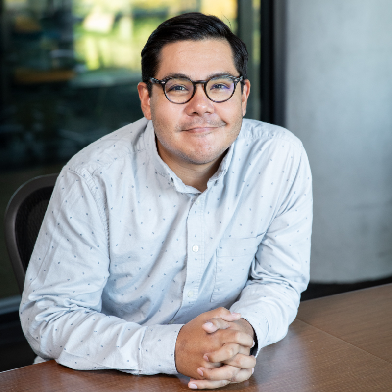

I am an Assistant Professor in the Department of Educational Leadership and Policy Analysis at the University of Wisconsin–Madison. My scholarship investigates how policies and practices shape resource allocation in K–12 public schools, with particular attention to mechanisms that perpetuate or disrupt inequities in students’ opportunities and outcomes. Using both quantitative and qualitative methods grounded in critical frameworks, I examine the relationships among school finance systems, district decision-making, and academic outcomes.
My research asks three interconnected questions: How do state school finance policies produce differential impacts across communities? How do educational leaders make resource allocation decisions, and what practices support improvement in equity-centered outcomes? And how can methodological approaches to K–12 educational finance better integrate considerations of power, race, and justice?
Prior to joining UW–Madison, I completed my Ph.D. in Educational Foundations, Policy, and Practice at the University of Colorado–Boulder (2022). I am a Fellow of the National Education Policy Center and a recipient of the NAEd/Spencer Postdoctoral Fellowship, the Vilas Early Career Investigator Award, the Jean Flanigan Outstanding Dissertation Award from the Association of Education Finance and Policy, and the AERA Minority Dissertation Fellowship.
If you are unable to access any of my work, please email me and I will be happy to share a copy.
My teaching is guided by two commitments: creating learning experiences that generate new ideas and break perceived barriers, and maintaining high expectations while providing extensive support. Across all of my courses, I want students to understand that resources in education are shaped by power, race, wealth, and politics—and that critical quantitative methods offer a powerful way to study these phenomena. Students leave my courses not only with technical skills but with a critical lens for understanding how data and methods are never neutral, along with artifacts they can use throughout their careers.
I believe good advising starts with deeply caring about students’ success and allowing them to define what success means for them. Whether a doctoral student aspires to a tenure-track position or wants to strengthen their practice as an educational leader, I work to meet them where they are. My advising follows a developmental approach—from onboarding in research fundamentals through progressively complex work in data management, analysis, and writing for publication—while building a community of emerging scholars who support one another.
I currently advise four Ph.D. students, three Executive Ph.D. students, and three M.A. students. I have chaired or co-chaired three dissertations—including one that received the department’s Dissertation of the Year Award—and serve on numerous additional dissertation and preliminary exam committees. My students have co-authored peer-reviewed publications and presented at AERA, AEFP, and UCEA.
What I hope students take from working with me extends beyond their degrees: a strong sense of self, confidence that they are ready to meet whatever challenges arise, and the knowledge that they have a lifelong supporter and thought partner. If you are interested in working together, please don’t hesitate to reach out.
A summary of my academic background is below.